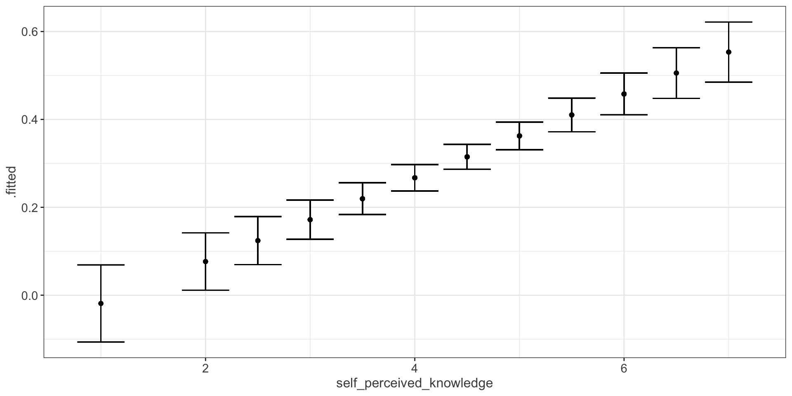
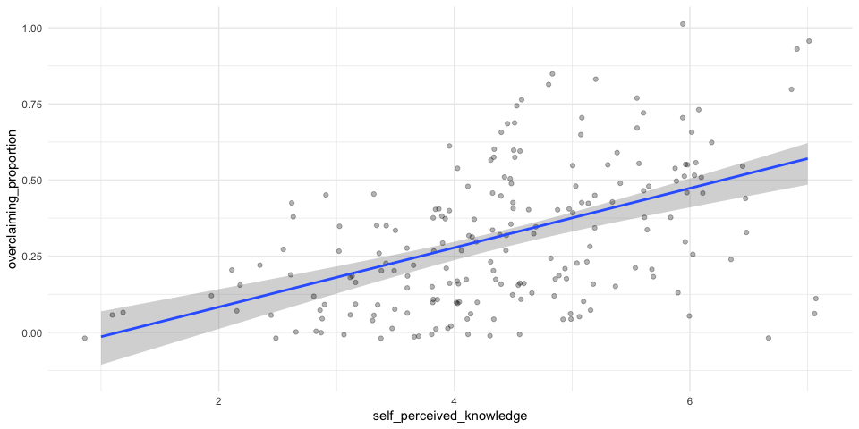
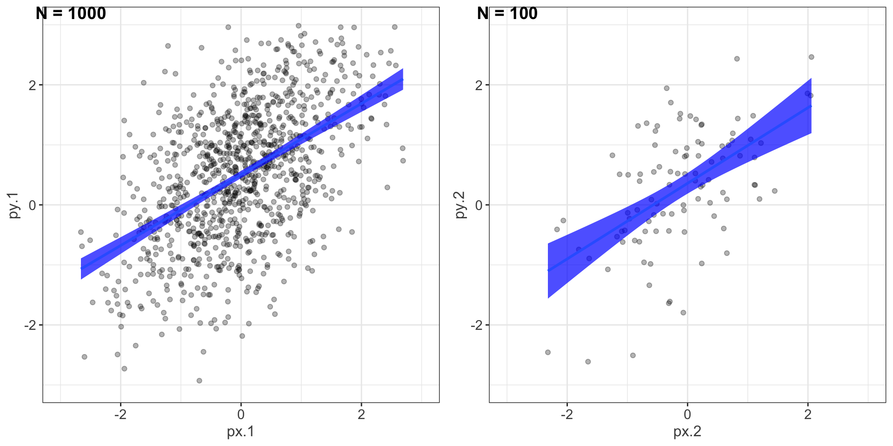
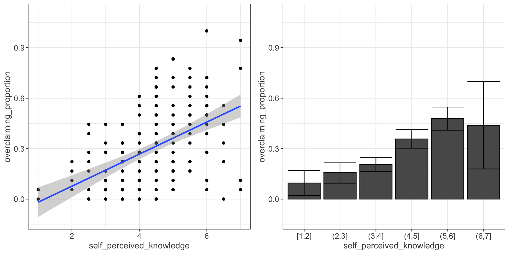

Univariate Regression
Part 3
Last week
Unstandardized regression equation
\[Y = b_0 + b_1X + e\]
- Intercept and slope are interpreted in the units of Y.
- Useful if the units of Y are meaningful.
- Built from covariances and variances
\[b_1 = \frac{cov_{XY}}{s^2_X}\]
Standardized regression equation
\[Z_Y = b^*_1Z_X + e\]
- Slope are interpreted in standardized units.
- Useful for comparison
- Built from correlations
\[b^*_1 = r_{xy}\]
Last week – Inferential tests
Omnibus test
Does the model fit the data?
F-test (ratio of variances)
- How many magnitudes larger is variability attributed to the model compared to left-over variability?
Effect size: Model fit can be measured in terms of \(\large R^2\) or \(\large s_{Y|X}\)
Terminology
- \(R^2\)
. . .
- <span style="color:purple">coefficient of determination</span>
- squared correlation between $Y$ and $\hat{Y}$
- proportion of variance in Y accounted for by the model- \(s_{Y|X}\)
. . .
- <span style="color:purple">standard error of the estimate</span> and the square root of the <span style="color:purple">mean square error (MSE)</span>
- measure of discrepancy between model and data
- MSE: variance around fitted regression lineExample
Overclaiming occurs when people claim that they know something that is impossible to know; are experts susceptible to overclaiming?
Participants1 completed a measure of self-perceived knowledge, in which they indicate their level of knowledge in the area of personal finance. Next participants indicated how much they knew about 15 terms related to personal finance (e.g., home equity). Included in the 15 items were three terms that do not actually exist (e.g., annualized credit). Thus, overclaiming occurred when participants said that they were knowledgeable about the non-existent terms.
vars n mean sd median trimmed mad min
id 1 202 101.50 58.46 101.50 101.50 74.87 1.00
order_of_tasks 2 202 1.50 0.50 1.50 1.50 0.74 1.00
self_perceived_knowledge 3 202 4.43 1.17 4.50 4.45 0.74 1.00
overclaiming_proportion 4 202 0.31 0.23 0.28 0.29 0.25 0.00
accuracy 5 202 0.30 0.21 0.28 0.29 0.21 -0.19
FINRA_score 6 202 3.70 1.19 4.00 3.85 1.48 0.00
max range skew kurtosis se
id 202.00 201.00 0.00 -1.22 4.11
order_of_tasks 2.00 1.00 0.00 -2.01 0.04
self_perceived_knowledge 7.00 6.00 -0.20 0.15 0.08
overclaiming_proportion 1.00 1.00 0.64 -0.31 0.02
accuracy 0.93 1.12 0.28 -0.07 0.01
FINRA_score 5.00 5.00 -1.01 0.57 0.08Analysis of Variance Table
Response: overclaiming_proportion
Df Sum Sq Mean Sq F value Pr(>F)
self_perceived_knowledge 1 2.5095 2.50948 60.249 0.0000000000004225 ***
Residuals 200 8.3303 0.04165
---
Signif. codes: 0 '***' 0.001 '**' 0.01 '*' 0.05 '.' 0.1 ' ' 1
Call:
lm(formula = overclaiming_proportion ~ self_perceived_knowledge,
data = expertise)
Residuals:
Min 1Q Median 3Q Max
-0.50551 -0.15610 0.00662 0.12167 0.54215
Coefficients:
Estimate Std. Error t value Pr(>|t|)
(Intercept) -0.11406 0.05624 -2.028 0.0439 *
self_perceived_knowledge 0.09532 0.01228 7.762 0.000000000000422 ***
---
Signif. codes: 0 '***' 0.001 '**' 0.01 '*' 0.05 '.' 0.1 ' ' 1
Residual standard error: 0.2041 on 200 degrees of freedom
Multiple R-squared: 0.2315, Adjusted R-squared: 0.2277
F-statistic: 60.25 on 1 and 200 DF, p-value: 0.0000000000004225regression coefficient
\[\Large H_{0}: \beta_{1}= 0\] \[\Large H_{1}: \beta_{1} \neq 0\]
What does the regression coefficient test?
Does X provide any predictive information?
Does X provide any explanatory power regarding the variability of Y?
Is the the average value different from the best guess
- (i.e., is \(\bar{Y}\) equal to \(\hat{Y}\) ?)
Is the regression line not flat?
Are X and Y correlated?
Regression coefficient
\[\Large se_{b} = \frac{s_{Y}}{s_{X}}{\sqrt{\frac {1-r_{xy}^2}{n-2}}}\] \[\Large t(n-2) = \frac{b_{1}}{se_{b}}\]
Call:
lm(formula = overclaiming_proportion ~ self_perceived_knowledge,
data = expertise)
Residuals:
Min 1Q Median 3Q Max
-0.50551 -0.15610 0.00662 0.12167 0.54215
Coefficients:
Estimate Std. Error t value Pr(>|t|)
(Intercept) -0.11406 0.05624 -2.028 0.0439 *
self_perceived_knowledge 0.09532 0.01228 7.762 0.000000000000422 ***
---
Signif. codes: 0 '***' 0.001 '**' 0.01 '*' 0.05 '.' 0.1 ' ' 1
Residual standard error: 0.2041 on 200 degrees of freedom
Multiple R-squared: 0.2315, Adjusted R-squared: 0.2277
F-statistic: 60.25 on 1 and 200 DF, p-value: 0.0000000000004225\(se_b\)
standard error for the slope coefficient
represent our uncertainty (noise) in our estimate of the regression coefficient
different from (but proportional to) the standard error of the estimate
we can take our estimate \((b)\) and put confidence regions around it to get an estimate of what could be “possible” if we ran the study again
Intercept
more complex standard error calculation
the calculation depends on how far the X value (here zero) is away from the mean of X
- farther from the mean, less information, thus more uncertainty
we’ll come back to this calculation shortly
Call:
lm(formula = overclaiming_proportion ~ self_perceived_knowledge,
data = expertise)
Residuals:
Min 1Q Median 3Q Max
-0.50551 -0.15610 0.00662 0.12167 0.54215
Coefficients:
Estimate Std. Error t value Pr(>|t|)
(Intercept) -0.11406 0.05624 -2.028 0.0439 *
self_perceived_knowledge 0.09532 0.01228 7.762 0.000000000000422 ***
---
Signif. codes: 0 '***' 0.001 '**' 0.01 '*' 0.05 '.' 0.1 ' ' 1
Residual standard error: 0.2041 on 200 degrees of freedom
Multiple R-squared: 0.2315, Adjusted R-squared: 0.2277
F-statistic: 60.25 on 1 and 200 DF, p-value: 0.0000000000004225Confidence interval for coefficients
- same equation as we’ve been working with:
\[CI_b = b \pm CV(se_b)\]
- How do we estimate the critical value?
Estimate Std. Error t value Pr(>|t|)
(Intercept) -0.11405571 0.05624236 -2.027932 0.0438935615758865028
self_perceived_knowledge 0.09531747 0.01227997 7.762029 0.0000000000004224832 2.5 % 97.5 %
(Intercept) -0.22495982 -0.003151603
self_perceived_knowledge 0.07110265 0.119532290\(b_1 \pm CV(se_b) = 0.095 \pm 1.972(0.012)\) \(b_1 \pm CV(se_b) = 0.095 \pm 0.024\)
\(se_{\hat{Y_i}}\)
In addition to estimating precision around the our coefficients, we can also estimate our precision around our predicted values, \(\hat{Y_i}\). Why might this be a useful exercise?
The formula to estimate the standard error of any particular \(\hat{Y_i}\) is
\[se_{\hat{Y}_i} = s_{Y|X}*\sqrt{\frac {1}{n}+\frac{(X_i-\bar{X})^2}{(n-1)s_{X}^2}}\]
vars n mean sd min max range se
overclaiming_proportion 1 202 0.31 0.23 0.00 1.00 1.00 0.02
self_perceived_knowledge 2 202 4.43 1.17 1.00 7.00 6.00 0.08
.fitted 3 202 0.31 0.11 -0.02 0.55 0.57 0.01
.se.fit 4 202 0.02 0.01 0.01 0.04 0.03 0.00
.resid 5 202 0.00 0.20 -0.51 0.54 1.05 0.01
.hat 6 202 0.01 0.01 0.00 0.05 0.04 0.00
.sigma 7 202 0.20 0.00 0.20 0.20 0.00 0.00
.cooksd 8 202 0.01 0.01 0.00 0.09 0.09 0.00
.std.resid 9 202 0.00 1.00 -2.50 2.68 5.18 0.07We can string these together in a figure and create confidence bands.
Code
expertise %>%
ggplot(aes(x = self_perceived_knowledge, y = overclaiming_proportion)) +
geom_jitter(size = .5, color = "darkgrey") +
geom_smooth(method = "lm") +
scale_x_continuous("Self-perceived knowledge") +
scale_y_continuous("Proportion of overclaiming") +
ggtitle("Using geom_smooth(se = TRUE)")+
theme_bw()Let’s return to the idea of the uncertainty around our slope and intercept estimates.
2.5 % 97.5 %
(Intercept) -0.22495982 -0.003151603
self_perceived_knowledge 0.07110265 0.119532290We accept that these ranges represent our guess for where the true values of these parameters could be. So while we estimated a single slope and single intercept, reasonably, there is a set of slopes and intercepts that we would consider reasonable.
What if we took the extremes from these distributions?
\(\hat{Y}_i = -0.22 + 0.12X_i\)
\(\hat{Y}_i = 0 + 0.07X_i\)
Code
expertise %>%
ggplot(aes(x = self_perceived_knowledge, y = overclaiming_proportion)) +
geom_jitter(size = .5, color = "darkgrey") +
geom_smooth(method = "lm") +
geom_abline(aes(intercept = ci[1,1], slope = ci[2,2])) +
geom_abline(aes(intercept = ci[1,2], slope = ci[2,1])) +
scale_x_continuous("Self-perceived knowledge") +
scale_y_continuous("Proportion of overclaiming") +
theme_bw()Code
set.seed(012220)
boots <- bootstrapper(100)
p <- expertise %>%
ggplot(aes(x = self_perceived_knowledge, y = overclaiming_proportion)) +
geom_smooth(method = "lm", color = NA) +
geom_jitter(alpha = 0.3) +
geom_smooth(data = boots, method = "lm", fullrange = TRUE, se = FALSE) +
theme_minimal() +
transition_states(.draw, 1, 1) +
enter_fade() +
exit_fade() +
ease_aes()
animate(p, fps = 3)
| ## Confidence Bands for regression line |
| ::: {.cell} |
| ```{.r .cell-code code-fold=“true”} set.seed(123) |
| px.1 <- rnorm(1000, 0, 1) pe.1 <- rnorm(1000, 0, 1) py.1 <- .5 + .55 * px.1 + pe.1 pd.1 <- data.frame(px.1,py.1) |
| px.2 <- rnorm(100, 0, 1) pe.2 <- rnorm(100, 0, 1) py.2 <- .5 + .55 * px.2 + pe.2 pd.2 <- data.frame(px.2,py.2) |
| p1 <- ggplot(pd.1, aes(x = px.1,y = py.1)) + geom_point(alpha = .3) + geom_smooth(method = lm, fill = “blue”, alpha = .7) + scale_x_continuous(limits = c(-3, 3)) + scale_y_continuous(limits = c(-3, 3)) |
| p2 <- ggplot(pd.2, aes(x=px.2, y=py.2)) + geom_point(alpha = .3) + geom_smooth(method=lm, fill = “blue”, alpha = .7) + scale_x_continuous(limits = c(-3, 3)) + scale_y_continuous(limits = c(-3, 3)) |
| library(cowplot) plot_grid(p1, p2, ncol=2, labels = c(“N = 1000”, “N = 100”)) ``` |
| ::: {.cell-output-display}  ::: ::: |
Compare mean estimate for self-perceived knowledge based on regression vs binning
Code
p1 = ggplot(expertise, aes(x=self_perceived_knowledge, y=overclaiming_proportion)) +
geom_point() +
geom_smooth(method=lm, # Add linear regression line
se=TRUE) +
scale_y_continuous(limits = c(-.12, 1.1))
p2 = expertise %>%
mutate(self_perceived_knowledge = cut_interval(self_perceived_knowledge, length = 1)) %>%
group_by(self_perceived_knowledge) %>%
summarize(m = mean(overclaiming_proportion),
s = sd(overclaiming_proportion),
n = n(),
se = s/sqrt(n),
cv = qt(p = .975, df = n-2),
moe = se*cv) %>%
ggplot(aes(x = self_perceived_knowledge, y = m)) +
geom_bar(stat = "identity") +
geom_errorbar(aes(ymin = m-moe, ymax = m+moe)) +
scale_y_continuous("overclaiming_proportion", limits = c(-.12, 1.1))
ggpubr::ggarrange(p1, p2, align = "v")
Confidence Bands
\[ \hat{Y}_i\pm t_{critical} * s_{Y|X}*\sqrt{\frac {1}{n}+\frac{(X_i-\bar{X})^2}{(n-1)s_{X}^2}}\] ### Prediction bands
\[\hat{Y}_i\pm t_{critical} * s_{Y|X}*\sqrt{1+ \frac {1}{n}+\frac{(X_i-\bar{X})^2}{(n-1)s_{X}^2}}\]
Prediction bands
predicting an individual \(i's\) score, not the \(\hat{Y}\) for a particular level of X. (A new \(Y_i\) given \(X_i\), rather than \(\bar{Y}\) given \(X_i\) )
Because there is greater variation in predicting an individual value rather than a mean, the prediction band is greater
Combines unknown variability of the estimated mean \((\text{as reflected in }se_b)\) with peoples’ scores around mean \((\text{standard error of the estimate }, s_{Y|X})\)
Code
temp_var <- predict(fit.1, interval="prediction")
new_df <- cbind(expertise, temp_var)
pred <- ggplot(new_df, aes(x=self_perceived_knowledge, y=overclaiming_proportion))+
geom_point() +
geom_smooth(method=lm,se=TRUE) +
geom_ribbon(aes(ymin = lwr, ymax = upr),
fill = "blue", alpha = 0.1) +
theme_bw(base_size = 20)
pred
Next time
The general linear model